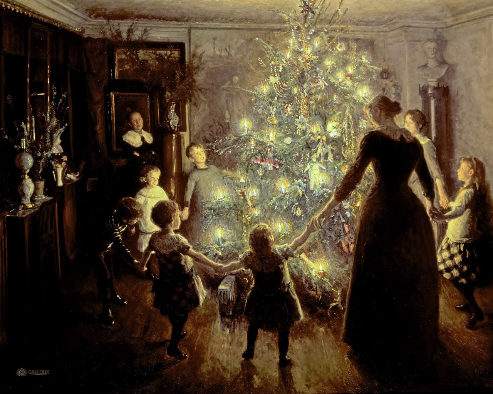

Вигго Юхансен
Glade jul (Счастливого Рождества), 1891

📄 Холст 🖌 масло 📏 127,2 x 158,5 см
🏛 Собрание Хиршпрунга, Копенгаген
Происхождение
- Рождество дома у семьи Йохансен, которая танцует вокруг ёлки в гостиной. Жена художника Марта видна на переднем плане между дочерьми Эллен и маленькой Нанной, а в ближайшем окружении также есть подруга детства Хелен Кристенсен из Скагена. Кого держит в руках старший сын Фриц, остается тайной, и хотя Йохансен был занят перед мольбертом, прозвучал веселый комментарий, что за деревом, вероятно, стоит сам Вигго. В углу - тетя Марты, которая издали наблюдает за радостным ожиданием группы детей в гостиной на Амалиегаде в Копенгагене.
- Картина была начата на Рождество 1890 года, но календарь показывал апрель 1891 года, прежде чем Йохансен закончил её. За прошедшие месяцы работы пришлось закрыть окна гостиной, включить свет и по очереди выстроить модели у дерева. Со временем ель начала поникать, и пришлось закупить свежие ветки. Помимо длительных усилий по поддержанию рождественской атмосферы в гостиной, дети по очереди заболели корью. 8 апреля Марта записала в дневнике:
- "К счастью, зима скоро закончится, и на этом картина закончится. Сегодня вечером Йохансен написал для Шарлоттенборга рецензию на картину. "Счастливого Рождества", - так он её назвал. Теперь посмотрим, какая у неё будет судьба, искренне желаем вам всего наилучшего. Износу было предостаточно..."
- Марта не могла знать, что Йохансен нарисовал то, что впоследствии стало одним из его самых популярных мотивов, хотя её энтузиазм по поводу семейной картины был велик. Она также отметила разочарование, когда «Счастливого Рождества» не было продано на весенней выставке в Шарлоттенборге в 1891 году. Лишь в 1894 году на картину появился покупатель, а именно Генрих Хиршпрунг, а вместе с ним якобы и перспектива того, что картина однажды окажется в музее.